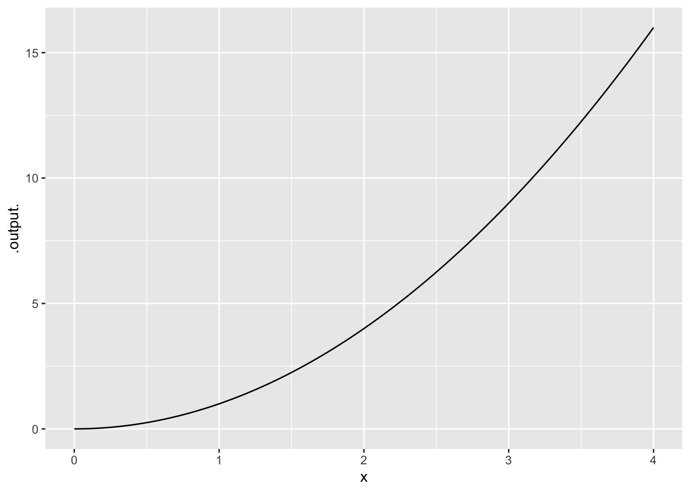
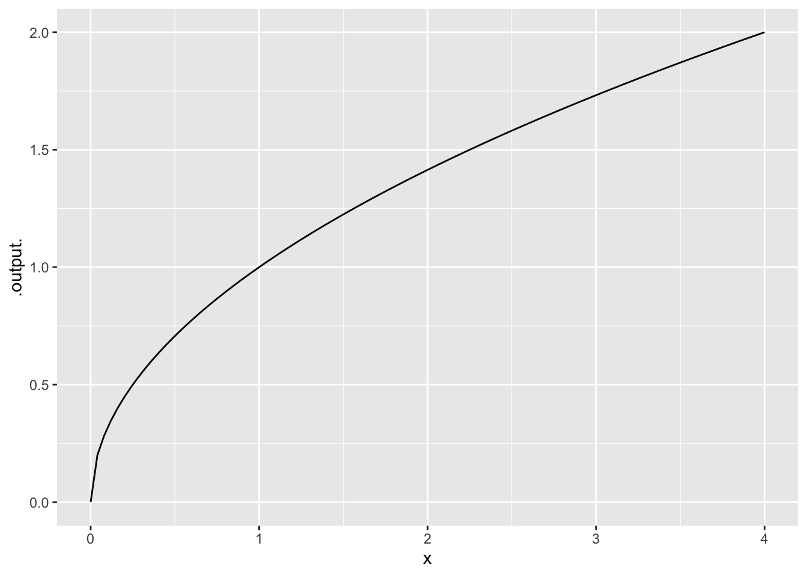
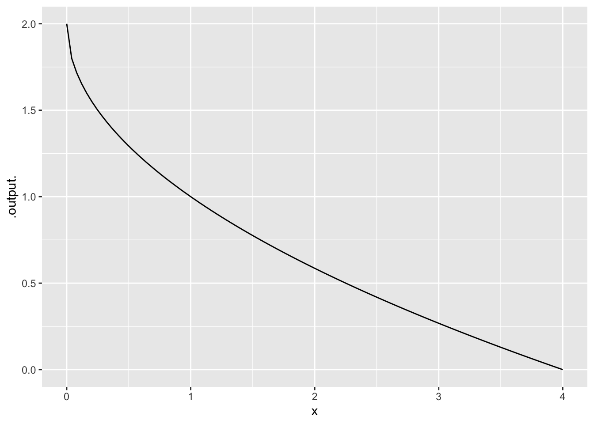
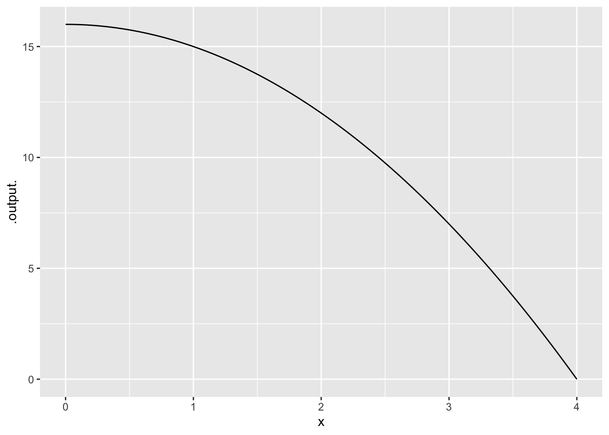

1 Functions
1.1 Rundown
Learning goals
- Explain what a function is
- Identify and explain independent and dependent variables
- Recognize functions in a variety of forms
- Find a function’s intercept(s)
- Identify regions where a function is increasing/decreasing
- Compute the average rate of change between two points on a function
- Determine where a function is concave up/down
- Compute the relative change between two points on a function
1.1.1 Steps of the Modeling Cycle
- Ask a question about reality.
- Make some observations and collect the corresponding data.
- Conjecture a model or modify a known model based on the data.
- Test the model against known data (from step 2.) and modify the model as needed.
- Repeat steps 2, 3 and 4 to improve the model
1.2 Activities
1.2.1 Life insurance
A family needs to purchase life insurance. What possible inputs might be used to determine the premium (monthly payment) for life insurance?
1.2.2 Bat species
In the Andes mountains in Peru, the number \(N\) of species of bats is a function of the elevation \(h\) in feet above sea level.
- What is the independent variable?
- What is the dependent variable?
- Interpret the statement \(f(500)=200\) if \(f\) represents this function.
- Do you expect this function to be increasing or decreasing? Why?
1.2.3 Slope and concavity
Sketch each of the following:
- An increasing function that is concave up
- An increasing function that is concave down
- A decreasing function that is concave up
- A decreasing function that is concave down
1.2.4 Relative change of the Dow Jones average
The relative change of a function \(f(x)\) on interval \([a,b]\) is \[ \frac{f(b)-f(a)}{f(a)}.\]
- What is the relative change in the Dow Jones average from 169.84 to 77.90 (from 1 January 1931 to 31 December 1931)?
- Compare this to the relative change in the Dow Jones average from 35,443.82 to 35,369.09 (from 2 September 2021 to 3 September 2021).
1.2.5 Measuring rainfall
One rainy summer day, measurements were recorded (in inches) from a rain gauge every hour.
| Time | 8 am | 9 | 10 | 11 | noon | 1 pm | 2 | 3 | 4 | 5 pm |
|---|---|---|---|---|---|---|---|---|---|---|
| Amount | 0.15 | 0.17 | 0.2 | 0.45 | 0.48 | 0.75 | 1.03 | 1.20 | 1.45 | 1.60 |
- What was the average rate of rainfall from 8 a.m. to 5 p.m.?
- What are the units of this rate of change?
1.3 Solutions
Click for Solutions
1.3.1 Life insurance
Here are some possible inputs. There are many more.
Age, gender, whether you smoke, blood pressure, BMI, pre-existing, health conditions, family health history, amount of insurance requested
1.3.2 Bat species
- The independent variable is the elevation \(h\)
- The dependent variable is the number \(N\) of species of bats.
- The statement \(f(500)=200\) means that there are 200 species of bats at the height of 500 feet.
- I expect that this function will be decreasing because, in general, there are fewer flora and fauna at higher altitudes.
1.3.3 Slope and concavity
Sketch each of the following:
- An increasing function that is concave up
- An increasing function that is concave down

- A decreasing function that is concave up

- A decreasing function that is concave down

1.3.4 Relative change of the Dow Jones average
The relative change is \[ \frac{77.90 - 169.84}{169.84} = -0.5413 \]
The relative change is \[ \frac{35369.09 - 35443.28}{35443.82} =-0.0021 \]
1.3.5 Measuring rainfall
One rainy summer day, measurements were recorded (in inches) from a rain gauge every hour.
| Time | 8 am | 9 | 10 | 11 | noon | 1 pm | 2 | 3 | 4 | 5 pm |
|---|---|---|---|---|---|---|---|---|---|---|
| Amount | 0.15 | 0.17 | 0.2 | 0.45 | 0.48 | 0.75 | 1.03 | 1.20 | 1.45 | 1.60 |
- The average rate of rainfall from 8 a.m. to 5 p.m. is \[ \frac{1.60 - 0.15}{17-8} = \frac{1.45}{9} = 0.1611 \]
- The units are inches per hour.